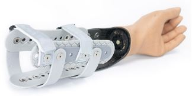
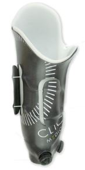
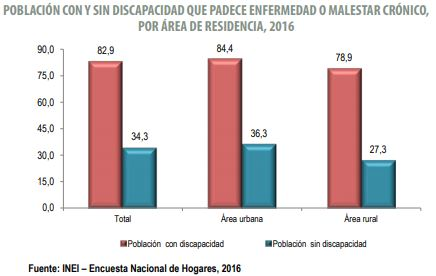
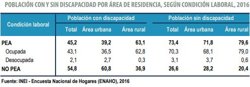
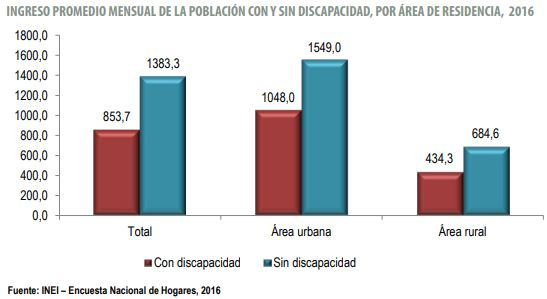

Estado del Arte
Existen algunos sockets en el mercado que buscan contrarrestar los efectos negativos de la mala ventilación, tal es el caso de:
a) SOCKET-LESS SOCKET, posee un transradial transformado, el cual se puede envolver alrededor de la extremidad y microajustarse de la extremidad para brindar un comodidad óptima,el zócalo más ligero y más fresco, su marco abierto permite una buena dispersión de calor.(MartinBionics, 2018)
Figura 1 Anonimo . (SF). Socket-less Socket-ICON Below Elbow- Transradial Transformed. 2018, de MartinBionics Sitio web: https://www.martinbionics.com/socket-less-socket-transradial/
b) REVOFIT, es un socket ajustable que se adapta a la necesidades de las tallas cambiantes diarias del muños de los usuarios, están compuestos por paneles que son graduados manualmente por medio de un sistema de cierre BOA, una perilla que permite al usuario modificar la presión y el ajuste del socket. Su encaje interno blando en Thermolyn suprasoft asegura al usuario un mayor confort, ya que su flexibilidad permite crear presión en diferentes zonas de los amputados transfemorales. La versión moderna están imbuidas con iones de plata, los cuales ejercen un efecto antibacteriano sobre el miembro residual del usuario.(Protésica, 2015)
Figura 2 Fuente: anónimo. (2015). Socket ajustable Revofit. 2018, de Protésica Sitio web: http://protesica.com.co/portfolio-item/socket-ajustable-revofit/
Por otro lado, la presencia de enfermedades crónicas en la población con discapacidad es más del doble que en la población sin discapacidad, lo cual significa que el costo implicado por parte del estado es mayor.
Asimismo, la población económicamente activa (PEA) con discapacidad es menor que la población sin discapacidad; es decir, estos deben recibir una subvención del estado. Además, las personas discapacitadas tienen un ingreso promedio mensual menor.

Hasta la actualidad, la industria protésica se ha enfocado en reemplazar la extremidad amputada para recuperar su función y para devolverle al paciente la sensación y apariencia de estar completo; sin embargo, no se ha atendido los efectos colaterales del uso de prótesis con el mismo énfasis.
DEFINICIÓN DE LA PROBLEMÁTICA
Como consecuencia del uso diario de un brazo prostético, ocurre la acumulación de sustancias de desecho en el socket, como pueden ser sudor, células muertas, polvo y suciedad que pueden provocar malos olores y la proliferación de bacterias y hongos. Esto podría conllevar a enfermedades como micosis, sarpullido por calor, ampollas, dermatitis de contacto, abrasiones y pelos encarnados dolorosos, afecciones evidenciadas en el transcurso del tiempo. (LaRaia Nicholas, 2010) (Díaz Lavana, Iván; 2010) (Protésica Colombia, 2015) La micosis es un tipo de infección común en usuarios de prótesis, producidas por distintos grupos de hongos patógenos para el hombre que invaden las estructuras queratinizadas, en los niveles superficial, subcutáneo y profundos o sistémicos de la piel (LaRaia Nicholas, 2010), ya que el contacto entre el muñón y el socket genera un ambiente oscuro, húmedo y cálido, apto para la proliferación de hongos.
Bibliografía
1. McMurtrie, A., & Watts, A. C. (2012). (vi) Tennis elbow and Golfer’s elbow. Orthopaedics and Trauma, 26(5), 337–344. https://doi.org/10.1016/j.mporth.2012.09.001
2. Ruiz, D. M. C. (2011). Epicondilitis lateral: conceptos de actualidad. Revisión de tema. Revista Med, 19(1), 74–81. https://doi.org/10.18359/rmed.1217
3. Luisa Miranda, A. M., Llanos, natalia V, Torres, C. B., Montenegro, C. S., & Jiménez, C. (2010). Revisión de epicondilitis: clínica, estudio y propuesta de protocolo de tratamiento. Revista Hospital Clínico Universidad de Chile, 21(1), 337–347.
4. Matthews, J. (2017). El tenis y el codo de golfista: epicondilitis, 87–90.
5. Peláez, B., & Fisioterapeuta, Á. (2006). Epicondilitis: revisión de historias clínicas. Rev Fisioter (Guadalupe), 5(1), 27–33.
6. Rempel, D. M., Amirtharajah, M., & Descatha, A. (2013). Shoulder, Elbow, & Hand Injuries. In J. LaDou & R. J. Harrison (Eds.), CURRENT Diagnosis & Treatment: Occupational & Environmental Medicine, 5e. New York, NY: McGraw-Hill Education. Retrieved from http://accessmedicine.mhmedical.com/content.aspx?aid=1104100660
7. MINSA. (2017). etadisticas epicondilitis laterar2017.
8. María Hortal Alonso, R., Salido Olivares, M., Navarro Alonso Gloria Candelas Rodríguez, P. Y., Valencia España, P., & La Fundación Española De Reumatología, S. DE. (2005). Epicondilitis. Seminarios de La Fundación Española de Reumatología, 6(2), 79–88.
9. Degen, R. M., Conti, M. S., Camp, C. L., Altchek, D. W., Dines, J. S., & Werner, B. C. (2018). Epidemiology and Disease Burden of Lateral Epicondylitis in the USA: Analysis of 85,318 Patients. HSS Journal, 14(1), 9–14. https://doi.org/10.1007/s11420-017-9559-3
10.Exploración física y pruebas clínicas para patología de codo. (n.d.). Retrieved August 29, 2018, from https://www.efisioterapia.net/articulos/exploracion-fisica-y-pruebas-clinicas-patologia-codo
11.Izquierdo, T. G. (1996). Antecedentes históricos de la Fisioterapia. 8/11, 1, 14. Retrieved from http://media.axon.es/pdf/64015.pdf
12.Rompe, J. D., Decking, J., Schoellner, C., & Theis, C. (2004). Repetitive Low-Energy Shock Wave Treatment for Chronic Lateral Epicondylitis in Tennis Players. The American Journal of Sports Medicine, 32(3), 734–743. https://doi.org/10.1177/0363546503261697
13.The Effects of Extracorporeal Shockwave Therapy (ESWT) in Treating Lateral Epicondylitis in People between 40 and 50 Years Old. (2014). Procedia - Social and Behavioral Sciences, 137, 32–36. https://doi.org/10.1016/J.SBSPRO.2014.05.248
14.ASCASO, J. (2010). Avances en el tratamiento de la hipercolesterolemia. Endocrinología y Nutrición, 57(5), 210–219. Retrieved from https://medes.com/publication/59438
15.Pulido, L., José, F., Guardeño, J., La Rosa, P. DE, & Ángeles, M. (n.d.). Francisco José Lara Pulido: Epicondilitis lateral: resultados del tratamiento quirúrgico con la técnica de Nirschl Epicondilitis lateral: resultados del tratamiento quirúrgico con la técnica de Nirschl, 29(May 2009), 24–30. Retrieved from http://www.portalsato.es/documentos/revista/Revista12-1/Rev. 2012-1-03.pdf
16.Martínez-Montiel, -Martínez, V., Bucio, B.-, & Villalobos-Campuzano. (2015). Tratamiento de epicondilitis de codo con plasma rico en plaquetas versus corticosteroide local. Acta Ortopédica Mexicana, 29(3), 155–158. Retrieved from http://www.medigraphic.com/actaortopedica
17.Fuente Fontaneda, H. (2014). Tratamiento de la epicondilitis: inyección de corticosteroides vs. fisioterapia. Retrieved from http://uvadoc.uva.es/handle/10324/5614